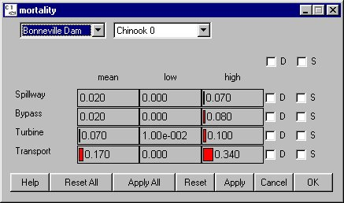

Mortality: Mortality in Dam Passage
Selecting Dam Mortality opens a window for setting the fish mortality rates for each dam and species in the various passage routes: spillway, bypass, turbine, and transport. Transportation mortality can be altered using parameters available in the Transport Mortality Equation window.
Mortality opens a window for setting the fish mortality rates for each dam and species in the various passage routes: spillway, bypass, turbine, and transport. Transportation mortality can be altered using parameters available in the Transport Mortality Equation window.
The probability distribution of mortality for each passage route is defined by a piecewise linear distribution within the range identified by low and high values. When the low and high values are set to zero or when the low and high values are set to the mean value, COMPASS uses the mean value at all times (the term becomes deterministic). When the low and high values are not equal, COMPASS uses the mean, low and high values to randomly generate a value when executed with variance suppression turned off in Runtime Settings (Run Menu). With variance suppression turned on, COMPASS uses the mean value and ignores the high and low values. In either case, the mean value must lie within the central two quartiles of the distribution (i.e., the middle 50%). For example, if the low value is set to 0 and the high value is set to 100 then the mean value must be set between 25 and 75. If the mean value does not conform to this restriction, COMPASS will abort the run and generate an error message in the Message Log (if open) specifying which species at which dams have bad values.
This is a Slider Input window. In this slider input window, you can group sliders by: Dam (D) or Species (S). If you group sliders by Dam (D), you are modifying the mean, low or high value for the corresponding passage routes for the specified Species at all dams. If you group sliders by Species (S), you are modifying the mean, low or high value for the corresponding passage routes at the specified Dam for all species.

Dam Mortality window